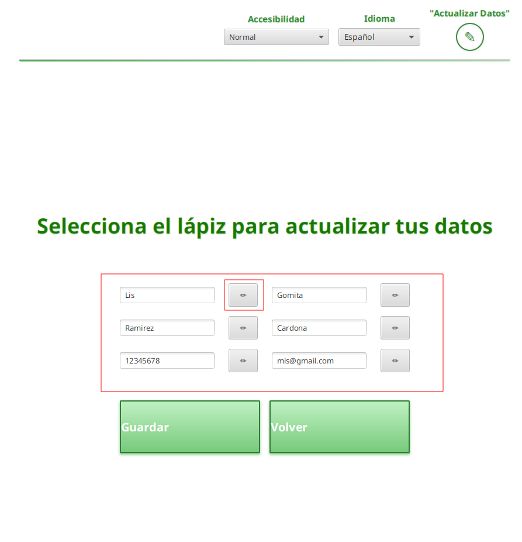

Tutorial: Menú de Usuario
Conoce cada elemento y funcionalidad del menú de usuario en la aplicación.
Vista general del menú de usuario
Esta es la pantalla principal del menú de usuario, donde puedes gestionar tus datos, residuos y estadísticas.
Accesibilidad e Idioma
Ajusta la accesibilidad visual o cambia el idioma de la aplicación desde estos menús desplegables.
Minimizar o Cerrar
Utiliza estos botones para minimizar la ventana o cerrar completamente la aplicación.
Volver al inicio y cerrar sesión
Haz clic aquí para regresar a la pantalla principal y cerrar tu sesión de usuario.
Volver al menú inicial
Regresa al menú inicial del usuario sin cerrar la sesión.
Actualizar datos personales
Modifica tu información personal desde esta sección. Haz clic en el lápiz para editar un campo.
Seleccionar lápiz para editar datos
Haz clic en el icono de lápiz para editar el dato correspondiente en la casilla seleccionada.
Guardar actualización de datos
Después de editar tus datos, haz clic en este botón para guardar los cambios realizados.
Registrar residuos
Agrega nuevos residuos y modifica o elimina selecciones desde esta sección.
Guardar los residuos a agregar
Una vez que hayas registrado los residuos, haz clic aquí para guardarlos en tu historial.
Listar residuos

Consulta la lista de residuos agregados, la cantidad en kilogramos y la fecha en que se registraron.
Cerrar lista de residuos
Haz clic en este botón para cerrar la sección de lista de residuos y volver al menú principal.
Consultar puntos

Visualiza tus puntos obtenidos por tipo de material y la fecha del último agregado.
Cerrar lista de puntos
Haz clic aquí para cerrar la sección de puntos y regresar al menú principal.
Generar reporte
Genera un reporte en PDF con tus estadísticas personales y grupales de reciclaje. Puedes guardarlo en tu PC y ver una vista previa.